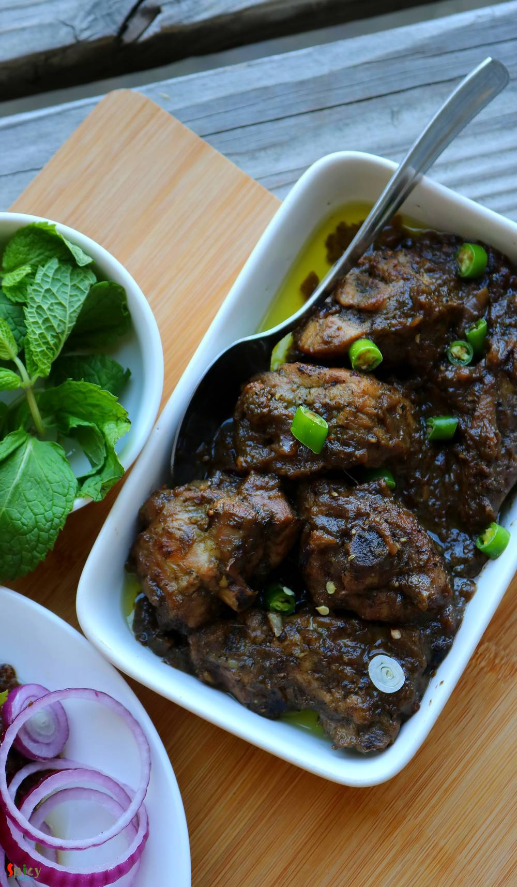

Simple and Easy Recipes
Pudina Chicken / Mint flavored Chicken Curry
© 2016 Spicy World, Published on: Oct 29, 2018
Pudina Chicken has a delicious yogurt and mint based gravy which goes best with plain roti or Indian flatbread. Mint leaves / Pudina patta has it's very own unique taste and flavor, which is why you can only use them in those dishes where it fits properly. Not every chicken curry tastes good with mint but this one is my family favorite. Pudina Chicken is very simple recipe with loads of fresh flavor of mint, coriander leaves, green chilies and black pepper. They all sounds delicious together, aren't they ? Don't forget to serve few lachha pyaz / raw onion rings with this 'pudina chicken'. Now enjoy the recipe with detailed video.

Ingredients
- 700 grams of chicken with bone pieces.
- 1 big onion, thinly sliced.
- 1 Tablespoon of fresh ginger garlic paste.
- 4 green chilies.
- 1.5 Tablespoons of fresh black pepper powder.
- 2-3 Tablespoons of curd / yogurt.
- Salt and sugar.
- A handful of fresh mint and coriander leaves.
- 3 -4 Tablespoons of vegetable oil.
- Water.
- 2 Teaspoons of fresh lemon juice.


Steps
Make a smooth paste out of mint leaves, coriander leaves, 2 green chilies along with 1/4th cup of water. Keep it aside.
Marinate the cleaned chicken pieces with yogurt, some salt, ginger garlic paste, 1 Tablespoon of black pepper powder and half of that mint coriander paste. Mix well and keep it aside for at least 2-3 hours.
Heat vegetable oil in a pan. Add the onion slices along with a pinch of salt. Fry for 4-5 minutes.
Then add the marinated chicken along with the marination. Cook for 15 minutes on medium flame.
Chicken will release lot of juices. So, after 15 minutes cook the chicken on its own juices for another 15-20 minutes or until it becomes soft on low flame.
If the gravy becomes dry add a splash of water.
When the gravy will become thick, add a big pinch of sugar, the remaining mint coriander paste and 1 chopped green chilies. Mix well for a minute and immediately turn off the heat. Do not cook long at this point otherwise the fresh flavor of mint will be gone.
Lastly add the remaining black pepper powder and 2 Teaspoons of fresh lemon juice. Mix well and serve hot.
Your pudina chicken is ready ..
Serve them hot with plain roti and some salads ..
")